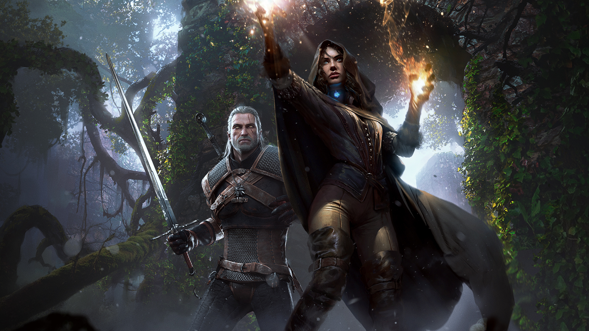

A caçada Selvagem

The Witcher 3: Wild Hunt is a 2015 action role-playing game developed and published by CD Projekt, based on The
Witcher series of fantasy novels by Andrzej Sapkowski. It is the sequel to the 2011 game The Witcher 2: Assassins of
Kings. Played in an open world with a third-person perspective, players control protagonist Geralt of Rivia, a monster
hunter known as a witcher, who is looking for his missing adopted daughter on the run from the Wild Hunt: an
otherworldly force determined to capture and use her powers. Players battle the game's many dangers with weapons and
magic, interact with non-player characters, and complete main-story and side quests to acquire experience points and
gold, which are used to increase Geralt's abilities and purchase equipment. Its central story has several endings,
determined by the player's choices at certain points in the game.
Development began in 2011 and lasted for three and a half years. Voice recording took over two and a half years. The
writing was infused with realistic aspects like moral ambiguity in a deliberate attempt to avoid simplification, impart
authenticity, and reflect Sapkowski's novels. Central and Northern Europe was the basis of the game's world. REDengine 3
enabled the developer to create a complex story without compromising the game's open world. The music was composed by
Marcin Przybyłowicz and performed by the Brandenburg State Orchestra.
The Witcher 3: Wild Hunt was released for Microsoft Windows, PlayStation 4, and Xbox One in May 2015, with a Nintendo
Switch version slated for 2019. The game received critical acclaim, with praise for its gameplay, narrative, world
design, combat, and visuals, although it received minor criticism due to technical issues. It received numerous Game of
the Year awards, and has been cited as one of the greatest video games of all time. It was also a commercial success,
shipping over twenty million copies by June 2019. Two expansions, Hearts of Stone and Blood and Wine, were also released
to critical acclaim. A Game of the Year edition, with the base game, expansions and all downloadable content, was
released in August 2016.
The Witcher 3: Wild Hunt is an action role-playing game with a third-person perspective. Players control Geralt of Rivia, a monster hunter known as a Witcher. Geralt walks, runs, rolls and dodges, and (for the first time in the series) jumps, climbs and swims. He has a variety of weapons, including bombs, a crossbow and two swords (one steel and one silver). The steel sword is used primarily to kill humans while the silver sword is more effective against creatures and monsters. Players can draw out, switch and sheathe their swords at will. There are two modes of melee attack; light attacks are fast but weak, and heavy attacks are slow and strong. Players can block and counter enemy attacks with their swords. Swords have limited endurance and require regular repair. In addition to physical attacks, Geralt has five magical signs at his disposal: Aard, Axii, Igni, Yrden and Quen. Aard prompts Geralt to unleash a telekinetic blast, Axii confuses enemies, Igni burns them, Yrden slows them down and Quen offers players a temporary, protective shield. The signs use stamina, and cannot be used indefinitely. Players can use mutagens to increase Geralt's magic power. They lose health when they are attacked by enemies, although wearing armour can help reduce health loss. Health can be restored with meditation or consumables, such as food and potions. Players occasionally control Ciri, Geralt's adoptive daughter who can teleport short distances. The game has responsive, advanced artificial intelligence (AI) and dynamic environments. The day-night cycle influences some monsters (and their powers), as a werewolf becomes powerful during the night of a full moon. Players can learn about their enemies and prepare for combat by reading the in-game bestiary. When they kill an enemy, they can loot its corpse for valuables. Geralt's witcher sense enables players to find objects of interest, including items that can be collected or scavenged. Items are stored in the inventory, which can be expanded by purchasing upgrades. Players can sell items to vendors or use them to craft potions and bombs. They can visit blacksmiths to craft new weapons and armour with what they have gathered. The price of an item and the cost of crafting it depend on a region's local economy.
The Witcher 3: Wild Hunt is an action role-playing game with a third-person perspective. Players control Geralt of Rivia, a monster hunter known as a Witcher. Geralt walks, runs, rolls and dodges, and (for the first time in the series) jumps, climbs and swims. He has a variety of weapons, including bombs, a crossbow and two swords (one steel and one silver). The steel sword is used primarily to kill humans while the silver sword is more effective against creatures and monsters. Players can draw out, switch and sheathe their swords at will. There are two modes of melee attack; light attacks are fast but weak, and heavy attacks are slow and strong. Players can block and counter enemy attacks with their swords. Swords have limited endurance and require regular repair. In addition to physical attacks, Geralt has five magical signs at his disposal: Aard, Axii, Igni, Yrden and Quen. Aard prompts Geralt to unleash a telekinetic blast, Axii confuses enemies, Igni burns them, Yrden slows them down and Quen offers players a temporary, protective shield. The signs use stamina, and cannot be used indefinitely. Players can use mutagens to increase Geralt's magic power. They lose health when they are attacked by enemies, although wearing armour can help reduce health loss. Health can be restored with meditation or consumables, such as food and potions. Players occasionally control Ciri, Geralt's adoptive daughter who can teleport short distances. The game has responsive, advanced artificial intelligence (AI) and dynamic environments. The day-night cycle influences some monsters (and their powers), as a werewolf becomes powerful during the night of a full moon. Players can learn about their enemies and prepare for combat by reading the in-game bestiary. When they kill an enemy, they can loot its corpse for valuables. Geralt's witcher sense enables players to find objects of interest, including items that can be collected or scavenged. Items are stored in the inventory, which can be expanded by purchasing upgrades. Players can sell items to vendors or use them to craft potions and bombs. They can visit blacksmiths to craft new weapons and armour with what they have gathered. The price of an item and the cost of crafting it depend on a region's local economy.
Kaer Morhen |
|
| Aqui vai um texto | Aqui vai outro texto |